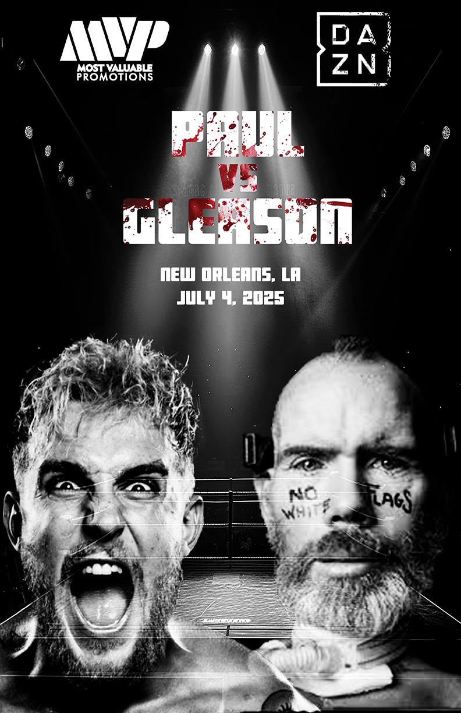

NASA Space Explorer
An API-driven web app that fetches and displays dynamic space-related content through a clean, interactive interface.
Selected work
An API-driven web app that fetches and displays dynamic space-related content through a clean, interactive interface.
A full-featured financial planning web app that helps users manage budgets, debts, and future cash flow through interactive tools and dashboards.
An interactive beauty-focused chatbot that helps users explore products and engage with a branded conversational interface.
A mobile-friendly inspection and deficiency tracking form with QR code access, direct email submission, timestamp logging, inspector signatures, and PDF export.
A motion graphic set on Bourbon Street where a glowing orb activates Mardi Gras color and light in a monochrome lamp scene.
A 10-second motion graphic inspired by modern video game UI that simulates progression and resolves with a high-impact level-up reveal.
A five-second motion graphic that uses anticipation and impact to transform a single chip into an energetic explosion of snack elements.

A bold event poster built in InDesign, designed for high contrast and impact at a glance.

A game-themed poster designed in InDesign, built around bold typography and a recognizable color palette.